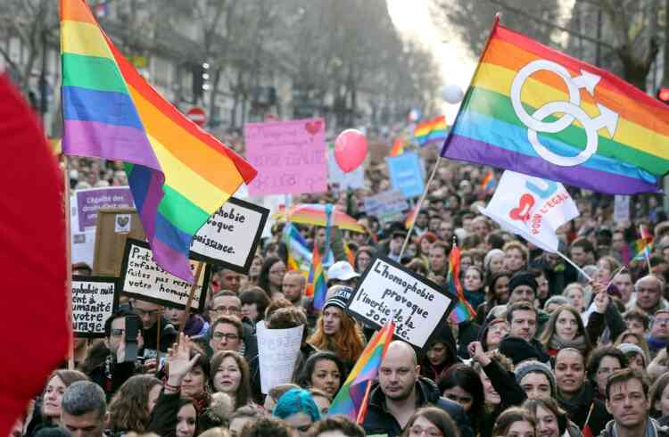

L'interdiction du mariage suicite des débats passionnés
Dans une décision controversée, le gouvernement à récemment annoncé l'interdiction du mariage homosexuel dans le pays. Cette nouvelle a suscité de vivre réaction et des debats passionnés au sein de la société. L'interdiction du mariage homosexuel a été justifiée par le gouvernement comme étant en accord avec les valeurs traditionnelles et religieuses du pays. Selon les autorités, cette décision vise a préserver l'institution du mariage tel qu'elle est définie depuis des siècles. Cependant, des nombreux defenseurs des droits des personnes LGBT+ et de l'égalité ont vivement critique cette interdiction. Ils estimes que cela constitue une violation des droits fondamentaux et une discrimination envers une partie de la population. De plus, ils soulignent que des nombreaux pays ont déja légalisé le mariage homosexuel, et que l'interdiction va à l'encontre des tendances mondiales en matière des droits LGBTQ+. Les partisants de l'interdiction du mariage homosexuel mettent en avant des arguments basés sur leur conception traditionnelle du mariage et de la famille. Ils estiment que le mariage doit être réservé a l'union entre un homme et une femme, et que l'ouverture du mariage aux couples de même sexe pourrait avoir des conséquences néfastes sur la société et la famille.
Cette décision a egalement suscité des réactions à l'échelle internationale. De nombreux pays et organisations de défense des droits humains expriment leur inquiétude face à cette interdiction et ont appelé le gouvernement à reconsidérer sa position. Il est important de souligner que cette interdiction ne concerne que le mariage civil et n'affecte pas les unions civiles ou les partenariats enregistrés, qui restent ouverts aux couples de même sexe. Le débat sur l'interdiction du mariage homosexuel est loin d'être clos et continuera de faire l'objet de discussions et de manifestations de la part de différentes parties consernées. La société reste divisée sur cette question et les prochains mois seront cruciaux pour déterminer l'avenir de cette politique. Il convient de noter que cette article vise à fournir une information neutre et a refléter les différentes perspectives sur ce sujet. Les opinions exprimées dans cette article ne reflètent pas nécessairement celles de la rédaction.